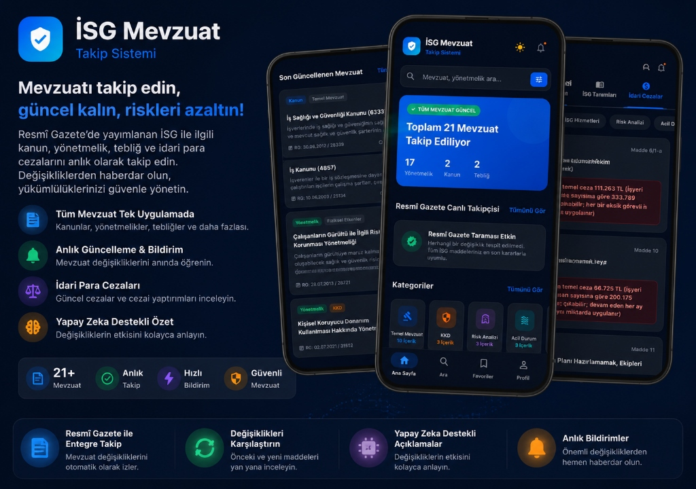

İSG Mevzuat & Yönetmelik Takip SistemiİSG Mevzuat Takip Sistemi
İş Sağlığı ve Güvenliği profesyonelleri için geliştirilen kapsamlı bir mobil uygulamadır. Uygulama sayesinde Resmî Gazete'de yayımlanan İş Sağlığı ve Güvenliği ile ilgili kanunlar, yönetmelikler, tebliğler ve idari para cezaları tek bir platform üzerinden takip edilebilir.
Sistem, mevzuat değişikliklerini otomatik olarak tespit ederek kullanıcıları anlık bildirimlerle bilgilendirir. Değişen maddeler karşılaştırmalı olarak görüntülenebilir; önceki ve güncel metinler yan yana incelenebilir ve değişikliklerin İSG uygulamalarına etkisi yapay zekâ destekli özetlerle kullanıcıya sunulur. Böylece İSG uzmanları, işverenler ve sektör profesyonelleri güncel mevzuatı hızlı, kolay ve güvenilir bir şekilde takip edebilir.
Detayları Gör